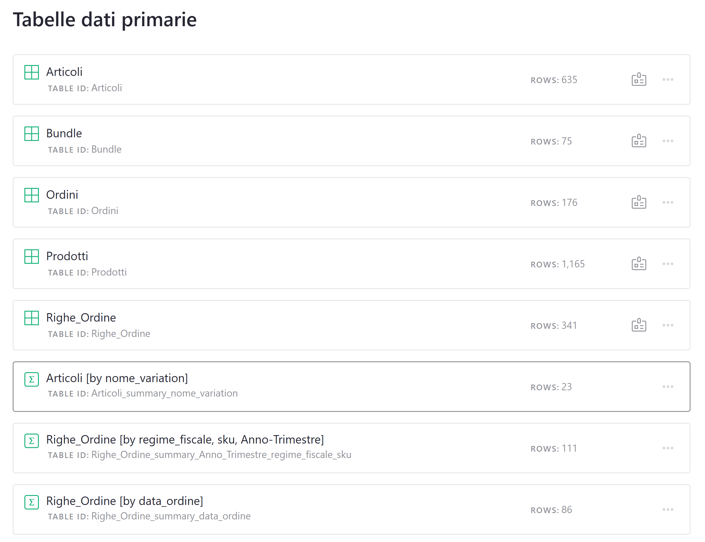
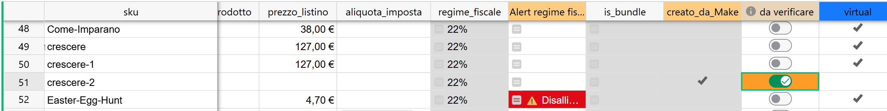
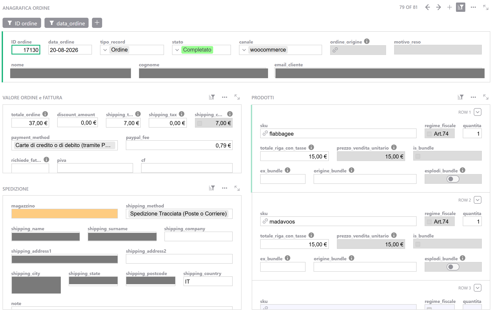
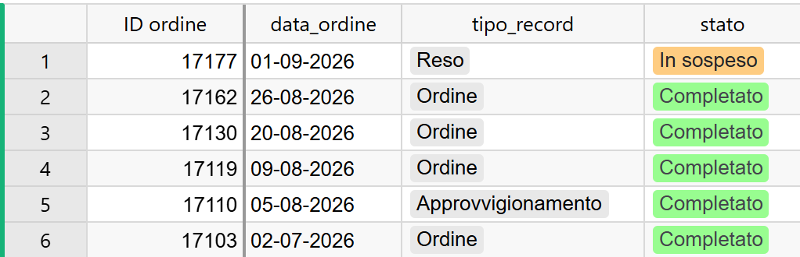
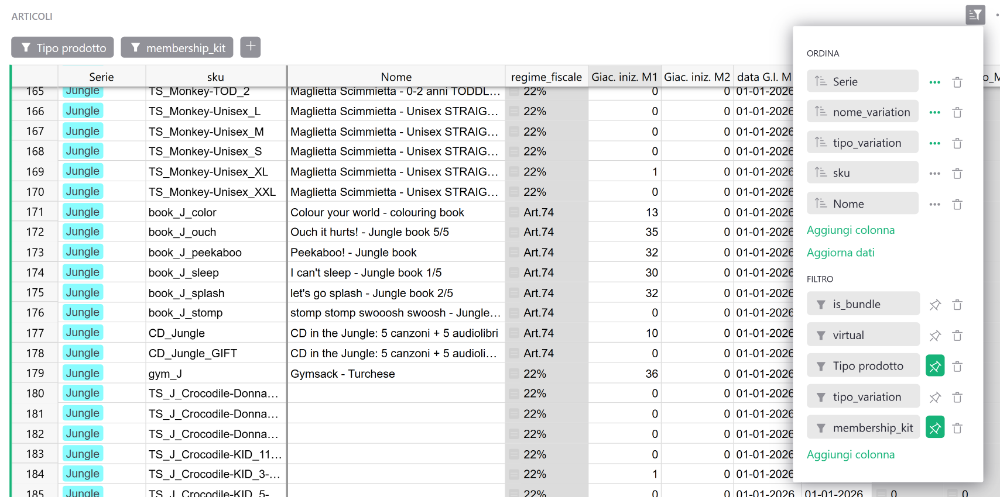

Guida 1
La mappa di Grist
Versione dell'11/09/2026 · Sistema «Magazzino LwM»
La guida 0 dice a cosa serve ogni pagina. Questa dice com'è fatta sotto: dove stanno davvero i dati, chi scrive ciascun campo, e su cosa è costruita ciascuna schermata.
Non è una guida da leggere tutta d'un fiato. È la mappa che si riapre quando ti chiedi «ma questo numero da dove esce?» oppure «questo campo lo posso correggere?».
§1 In breve
Grist tiene i dati in otto tabelle e te li mostra in diciassette pagine.
Le tabelle sono i cassetti: lì i dati esistono. Le pagine sono finestre affacciate su quei cassetti, ciascuna con i suoi filtri e le sue colonne. È il motivo per cui lo stesso ordine si vede in quattro schermate diverse, e per cui un articolo può sembrare sparito quando è solo fuori dalla finestra che stai guardando.
Se di questa guida ricordi una cosa sola, ricorda questa: le pagine non sono le tabelle.
§2 Otto tabelle, diciassette pagine
Cinque tabelle contengono i dati veri:
| Tabella | Una riga è… |
|---|---|
Articoli | Un oggetto fisico, identificato dal suo SKU. È l'anagrafica del magazzino |
Prodotti | Un prodotto come sta a catalogo su WooCommerce (IT ed EN separati) |
Ordini | La testata di un ordine, di un reso o di un carico di magazzino |
Righe_Ordine | Un prodotto dentro uno di quei tre |
Bundle | Un pezzo che sta dentro un kit |
Le altre tre non contengono niente di proprio: sono tabelle di riepilogo, cioè riassunti automatici delle prime. Sono i motori dei report, e ne parliamo alla fine della sezione 3.
Prodotti Bundle
(specchio del catalogo) (la ricetta dei kit)
│ │
│ nome, prezzo, │ quale kit
│ aliquota │ contiene cosa
▼ ▼
┌───────────────────────────────────────┐
│ ARTICOLI │
│ un oggetto fisico = uno SKU │
│ + le sue giacenze │
└───────────────────▲───────────────────┘
│ collegamento
│ tramite SKU
┌───────────────────┴───────────────────┐
│ RIGHE_ORDINE │
│ una riga per prodotto │
└───────────────────▲───────────────────┘
│
┌───────────────────┴───────────────────┐
│ ORDINI │
│ una testata per ordine, reso │
│ o carico di magazzino │
└───────────────────────────────────────┘
Tutti i collegamenti passano dallo SKU, mai da un codice interno.
Lo SKU è il perno di tutto. È quello che unisce la versione italiana e quella inglese dello stesso libro in un solo articolo, ed è quello che permette di inserire un ordine a mano scrivendo un codice che conosci invece di cercare un numero.
Una pagina è una finestra
Da qui discendono quattro conseguenze pratiche, e sono tutte cose che capitano davvero.
Più pagine possono guardare la stessa tabella. Gli ordini si vedono in Ordini, in Ordini Aperti, in Resi senza righe e in Approvvigionamenti: è sempre la stessa tabella, con quattro filtri diversi.
Quello che scrivi da una pagina finisce nella tabella. Non esiste una copia di lavoro. Se correggi una giacenza dalla pagina Giacenze, l'hai corretta in Articoli, e la vedranno tutte le altre finestre.
Un filtro nasconde, non toglie. Una riga che non compare non è stata cancellata: è fuori dalla finestra. Questo è il caso buono.
Cancellare una riga la cancella davvero. Questo è il caso cattivo, ed è il punto in cui i due gesti si somigliano più di quanto dovrebbero.
{kind=link}

§3 Le tabelle, una per una
Ogni scheda risponde alle stesse domande: cos'è una riga, chi la crea, quali campi contano, quali non si toccano.
I campi elencati come «non si toccano» sono quelli che il documento calcola da sé. In Grist li riconosci perché hanno lo sfondo grigio (guida 0, sezione 8). Scriverci dentro non dà errore: dà un valore che poi viene ignorato.
Articoli — l'anagrafica del magazzino
Una riga è un oggetto fisico identificato dal suo SKU. Le versioni italiana e inglese dello stesso libro sono un solo articolo.
Chi la crea: tu, quando aggiungi qualcosa a mano, oppure il sistema, quando arriva un ordine con uno SKU che non conosce (e in quel caso ti manda una mail).
È la tabella da tenere in ordine. Tutto il resto del sistema le fa domande: il regime fiscale di una vendita, il prezzo di copertina di un report, la giacenza di un magazzino. Un articolo incompleto non blocca niente: produce numeri sbagliati.
I campi che contano
| Campo | Cosa fa |
|---|---|
sku | La chiave di tutto: deve essere identico, carattere per carattere, allo SKU del sito. Non si cambia (guida 5) |
Nome | Il nome che leggi ovunque, anche nei report. Correggibile a mano |
| Serie | La collezione (Down Under, Jungle, Rockies, Savannah). Raggruppa il Report Art.74 e la matrice delle magliette |
| Tipo prodotto | libro, cd, kit, t-shirt. Va scelto a mano: senza, una maglietta non entra nella matrice taglie |
aliquota_imposta | È il campo da cui esce il regime fiscale. Il regime non si scrive: si sceglie l'aliquota dal menu, e il regime si calcola. Si sceglie sempre, anche standard per il 22%: un'aliquota vuota vale comunque 22%, ma non dice se qualcuno l'ha controllata (guida 5) |
prezzo_listino | Il prezzo di copertina con cui il Report Art.74 fa i suoi conti. Se è vuoto, il report conta le copie ma i valori restano a zero |
genitore | Per una variante (una taglia di maglietta, per esempio): lo SKU del prodotto principale, scritto esattamente. Da lì la variante eredita l'aliquota |
tipo_variation | Si sceglie dal menu: simple per un prodotto senza varianti, variable per il prodotto principale di una famiglia (che non si vende e non ha giacenza), variation per una singola variante |
taglia_tshirt | La taglia. Si sceglie sempre a mano: non si compila mai da sola. Alimenta la matrice: se resta vuota, il pezzo finisce nella colonna N.C. (guida 6) |
virtual | Dice che l'articolo non ha esistenza fisica (un webinar, l'accesso alla piattaforma). Un articolo virtuale resta fuori dal magazzino |
| da verificare | Si accende da solo sugli articoli creati dal sistema. Lo spegni tu, quando hai controllato |
| Giac. iniz. M1 / M2 e le loro date | Vivono qui, ma si compilano dalla pagina Giacenze: scheda successiva |
Non si toccano: regime_fiscale (esce dall'aliquota), is_bundle (esce dalla tabella Bundle), nome_variation (tiene insieme le varianti di un modello e si calcola dal genitore), Alert regime fiscale, check_elimina, membership_kit, Prodotto_IT e Prodotto_EN, e tutte le colonne del venduto e della giacenza attuale.
Un campo a parte è creato_da_Make: dice da dove viene l'articolo, resta acceso per sempre e non è una cosa da fare. Non confonderlo con da verificare, che invece è un lavoro in attesa.
Una colonna da conoscere è check_elimina, con l'intestazione arancione dei controlli. Se mostra «⚠ Non eliminare!», quell'articolo è usato da una vendita, da una variante o da una ricetta, e non si elimina. Un articolo fuori catalogo, del resto, può restare dov'è per sempre (guida 5).
Perché funziona così — i campi che si compilano da soli lo fanno una volta sola
Sei campi di questa tabella — nome, prezzo di listino, aliquota, genitore, tipo di variante, virtuale — si riempiono automaticamente se al momento in cui l'articolo nasce esiste già la riga corrispondente in Prodotti, la copia del catalogo del sito che si aggiorna a mano.
Succede una volta e non si ripete. Ha due conseguenze, una buona e una da ricordare:
- quello che correggi a mano resta: nessun automatismo tornerà a sovrascriverlo;
- quello che alla nascita era vuoto resta vuoto per sempre, anche se il prodotto viene aggiunto a
Prodottiil giorno dopo: l'unico modo per riempirlo è scriverlo a mano.
Il secondo caso è quello degli articoli creati dal sistema quando arriva un ordine con uno SKU sconosciuto, ed è esattamente il motivo per cui arriva la mail. La procedura di verifica è nella guida 5.
{kind=link}

La pagina Giacenze — la stessa tabella, un'altra finestra
I numeri del magazzino vivono dentro Articoli, ma non si vedono nella pagina Articoli: le colonne delle giacenze sono mostrate soltanto qui. Nella pratica conviene trattare questa pagina come se fosse una tabella a sé, e sapere che lo è solo per modo di dire: quello che scrivi qui lo stai scrivendo in Articoli.
I campi che contano
| Campo | Cosa fa |
|---|---|
| Giac. iniz. M1 / M2 | I pezzi da cui parte il conto, per ciascuno dei due magazzini. Si scrivono quando l'articolo è nuovo, e poi quasi mai più: quello che succede dopo si registra come movimento (guida 6) |
| data G.I. M1 / M2 | La data a cui quel numero si riferisce. È la data da cui il sistema comincia a contare: tutto ciò che è successo prima viene ignorato. Va compilata sempre, anche con zero pezzi, e non si sposta mai indietro |
Non si toccano: venduto_M1, venduto_M2, venduto_X, Giac. att. M1, Giac. att. M2, Giac. att. TOT.
Il conto è sempre lo stesso: giacenza iniziale meno venduto, a partire dalla data. venduto_X è la colonna dei pezzi usciti da ordini a cui nessuno ha ancora assegnato un magazzino: non appartengono né all'uno né all'altro, ma il totale li toglie lo stesso.
Cosa non trovi in questa pagina. Tre filtri tengono fuori i kit, i prodotti virtuali e i genitori delle famiglie di magliette. Non è una dimenticanza: un kit non ha una giacenza propria, perché quello che si muove sono i pezzi che contiene; un prodotto virtuale non ha pezzi da muovere; e il genitore di una famiglia non si vende mai, perché si vendono le sue taglie. La conseguenza è che la giacenza di un kit non è consultabile da nessuna parte, ed è corretto così: non esiste.
Ci sono poi due filtri di comodo, che si cambiano liberamente: uno per tipo di prodotto, uno per isolare i componenti di un certo kit.
Rettificare una giacenza e registrare un carico di merce sono due cose diverse, e non sono intercambiabili: la guida 6 spiega quando serve l'una e quando l'altra.
Prodotti — lo specchio del catalogo
Una riga è un prodotto come sta su WooCommerce, con le versioni italiana e inglese separate.
Serve a una cosa sola: al momento in cui nasce un articolo, gli passa nome, prezzo, aliquota e i dati sulle varianti. Oggi si aggiorna a mano, e il sistema funziona anche se non è aggiornata: tutto quello che conta si può scrivere direttamente in Articoli. Il resto — compreso perché a volte i campi di un articolo restano vuoti — è nella guida 5.
Ordini — le testate, di tre tipi diversi
Una riga è la testata di un ordine, di un reso o di un carico di magazzino. Il campo tipo_record dice quale delle tre.
Chi la crea: il sistema, per gli ordini che arrivano dal sito e per i resi; tu, per gli ordini inseriti a mano e per i carichi di magazzino.
I campi che contano
| Campo | Cosa fa |
|---|---|
| ID ordine | Il numero dell'ordine su WooCommerce. Su un reso contiene il numero del rimborso, non quello dell'ordine. Sui record che crei tu se lo dà il sistema: una numerazione bassa che parte da 1, tenuta separata da quella di WooCommerce (guida 3) |
data_ordine | La data dell'ordine. Su un reso è la data del rimborso; su un carico, la data in cui la merce è entrata |
tipo_record | Ordine, Reso, Approvvigionamento o Altri movimenti |
stato | Decide se il record conta. Entrano nei report e muovono il magazzino solo Completato e Rimborsato |
| richiede_fattura | Dice se la vendita è con fattura o senza. È il campo che decide se un ordine entra nel Registro Corrispettivi: vedi il riquadro qui sotto |
magazzino | Da dove parte la merce. Sta sulla testata, non sulle righe: merce che parte da due magazzini richiede due record |
canale | Da dove viene l'ordine. Oggi vale woocommerce per tutti, anche per gli ordini dei rappresentanti; fra le scelte c'è già ambassador, e correggerla a mano è innocuo (guida 3) |
note | Campo libero. Su un carico di magazzino è dove va il riferimento alla fattura del fornitore |
piva, cf, fattura_ricevuta | I dati da cui dipende la fattura |
totale_ordine, shipping_total, shipping_tax, paypal_fee | Gli importi che arrivano dal sito e finiscono nei report. La spedizione sta in due caselle — l'imponibile e la sua IVA — perché nel Registro Corrispettivi entra al lordo, come tutto il resto |
ordine_origine | Su un reso: l'ordine che sta stornando. Lo scrive il sistema sui resi che arrivano dal sito; su un reso inserito a mano lo scrivi tu, ed è quello che fa muovere il netto dell'ordine stornato (guida 4) |
motivo_reso | Il motivo scritto su WooCommerce al momento del rimborso. Su entrambi questi campi lo sfondo è grigio quando il record non è un reso |
| I campi del cliente e della spedizione | Si leggono; si correggono se serve, ma la correzione resta in Grist |
Non si toccano: totale_reso, totale_netto, nr_righe_ordine, nr_prodotti, tot_imponibile, lista_sku, check_quantita, alert_approvv, shipping_con_tasse — che somma da sola le due caselle della spedizione — e le due colonne che decidono cosa compare in Ordini Aperti.
Esistono anche due campi previsti per le provvigioni dei rappresentanti, oggi vuoti: se ne parlerà quando quel flusso sarà completo.
Righe_Ordine — dove i numeri si formano
Una riga è un prodotto dentro un ordine, un reso o un carico.
Chi la crea: il sistema, riga per riga, quando l'ordine arriva; il sistema, in negativo, quando c'è un rimborso; il sistema di nuovo, quando esplode un kit nei suoi pezzi; tu, quando inserisci un ordine o un carico a mano.
È la tabella più importante da capire, per una ragione sola: i report e le giacenze sommano righe, mai testate. Un ordine senza righe non esiste per nessuno dei due, per quanto il suo totale sia scritto in chiaro sulla testata. È il motivo per cui esiste la pagina Resi senza righe.
I campi che contano
| Campo | Cosa fa |
|---|---|
ordine | A quale testata appartiene la riga |
sku | L'articolo, da scegliere nel menu a tendina |
| quantita | I pezzi. Ed è il campo più delicato del documento, per via del segno: le vendite sono positive, i resi e i carichi negativi (guida 0, regola 3) |
totale_riga, tasse_riga, totale_riga_con_tasse | I valori. L'ultimo è quello che il Registro Corrispettivi somma |
| item id | Il numero della riga su WooCommerce. È il filo che tiene insieme una vendita e il suo rimborso |
esplodi_bundle | L'unica casella di questa tabella che fa partire qualcosa: accendendola, il sistema aggiunge le righe dei pezzi di un kit (guida 3 e guida 5) |
| prodotto_rientrato | Su un reso: la merce è tornata indietro. Riaccredita il magazzino. Può arrivare già acceso, se al momento del rimborso hai spuntato «Rifornisci i prodotti rimborsati» su WooCommerce — e in quel caso la riga non passa dalla pagina Resi in attesa di rientro (guida 4) |
| chiuso_senza_rientro | Su un reso: la merce non tornerà. Chiude la pendenza e lascia il magazzino fermo |
Sulle ultime due c'è molto altro da sapere, e sta tutto nella guida 4: qui basti che sono due caselle diverse, con due effetti diversi.
Non si toccano: data_ordine, richiede_fattura, regime_fiscale, nome prodotto, prezzo_listino, is_bundle, sku_string, ordine_id_woo, Anno-Trimestre, mese, quantita_resa, quantita_netta, da_ricevere, rientrato_effettivo, e le tre colonne di controllo check_articolo, check_quantita e check_reso_kit.
Tre campi meritano una riga in più. ex_bundle e origine_bundle dicono che quella riga è il pezzo di un kit e da quale kit viene: li scrive il sistema e non vanno modificati. bundle_esploso è la protezione contro le doppie esplosioni: spegnerlo a mano fa arrivare i pezzi una seconda volta, e il magazzino scala il doppio.
Due colori in questa pagina non dicono niente sui dati e servono solo a leggerla meglio: la colonna dell'ordine alterna due tonalità di azzurro a ogni cambio di ordine, e la cella dello SKU prende il colore della serie dell'articolo. Nessuno dei due è un divieto.
Bundle — la ricetta dei kit
Una riga è un pezzo dentro un kit. Un kit fatto di tre cose ha tre righe.
I campi che contano: bundle_sku (il kit), product_sku (il pezzo, da un menu che non propone i kit: un kit non può contenerne un altro), quantita (quanti pezzi di quello ce ne sono dentro, scritta sempre, anche quando è 1).
Non si toccano: i due nomi, che si scrivono da soli a partire dagli SKU.
La tabella ha anche due colonne nascoste che ripetono gli SKU in forma di testo: servono agli automatismi per riconoscere i kit, e non riguardano il lavoro quotidiano.
Creare e modificare un kit è nella guida 5. Vale la pena sapere fin d'ora che questa tabella è ciò che rende un articolo un kit: un articolo che compare qui come bundle_sku smette automaticamente di avere una giacenza propria.
Le tre tabelle di riepilogo — i motori dei report
Non contengono dati propri. Sono riassunti che Grist ricalcola da solo:
- uno raggruppa le righe d'ordine per giorno e produce il REPORT Corrispettivi e il Report Fee Paypal;
- uno raggruppa le righe per trimestre, regime e prodotto e produce il REPORT Art. 74;
- uno raggruppa gli articoli per modello di maglietta e produce le Giacenze T-Shirt.
Nella schermata Dati grezzi compaiono con nomi lunghi e poco amichevoli: è normale, sono nomi che si dà Grist da solo.
Qui non si modifica niente. E c'è una cosa da sapere che non si vede a schermo: le condizioni che decidono quali vendite entrano in un report — solo quelle fiscalmente valide, solo quelle senza fattura, solo quelle in Art.74 — non sono filtri della pagina: stanno dentro le formule del riepilogo. È una scelta voluta, ed è spiegata nella sezione 5.
§4 Chi scrive cosa
Tre mani scrivono in questo documento, e distinguerle risparmia la maggior parte dei dubbi.
| Lo scrivi tu | Lo scrive il sistema | Lo calcola il documento |
|---|---|---|
| Magazzino sull'ordine | Ordini e righe che arrivano dal sito | Regime fiscale |
| Serie, Tipo prodotto, taglia; tipo di variante e genitore, dove mancano | Resi, con le righe in negativo | Giacenze e venduto |
| Giacenze iniziali e loro date | Articoli mancanti, con nome e aliquota | Totali, conteggi, colonne dei report |
Aliquota (sempre, anche standard) e prezzo di listino | Righe dei pezzi di un kit | Le colonne di controllo arancioni |
| Ordini e carichi inseriti a mano | Il cambio di stato di un ordine | Cosa compare in ciascuna pagina |
| Le due caselle dei resi | Il numero degli ordini inseriti a mano |
La terza colonna è quella grigia: si legge, non si scrive. Le altre due si sovrappongono più di quanto sembri, perché su quasi tutto ciò che scrive il sistema tu puoi intervenire dopo — ed è giusto così, visto che gli automatismi copiano ma non giudicano.
I nomi delle colonne: quello che leggi e quello che c'è sotto
Ogni colonna ha due nomi: l'etichetta, che è quella che vedi in cima alla colonna, e un identificativo interno, che è il nome con cui la chiamano le formule e gli automatismi. Quasi sempre coincidono. In qualche caso no, e le guide usano sempre l'etichetta, cioè quella che leggi tu:
| Quello che leggi | Quello che c'è sotto |
|---|---|
| ID ordine | id_woo |
| item id | idem_id |
| nome prodotto | id_prodotto_nome |
| prezzo_listino (nelle righe d'ordine) | sku_prezzo_listino |
Nei due report le differenze sono molte di più — Art.74, 4%, N.C. e i nomi dei mesi hanno tutti un identificativo diverso alle spalle. Non è un problema: serve solo saperlo, perché se dovessi segnalare qualcosa a Paolo lui potrebbe chiamare una colonna con l'altro nome.
I colori delle intestazioni e lo sfondo grigio sono spiegati nella guida 0, sezione 8. Vale la pena rileggerla una volta prima di mettere mano a una tabella: sono l'unico posto in cui questo documento dice «non toccare» a colpo d'occhio.
§5 Le diciassette pagine
Prima: i due tipi di filtro
Ogni pagina è la sua tabella più un filtro. Ma i filtri non sono tutti uguali.
I filtri che definiscono la pagina. Ordini Aperti mostra gli ordini che aspettano qualcosa; Approvvigionamenti mostra solo i carichi; Giacenze tiene fuori kit, virtuali e genitori delle magliette. Togliere uno di questi non «mostra qualcosa in più»: trasforma la pagina in un'altra cosa, e nessuno se ne accorge finché non se ne accorge il commercialista.
I filtri di comodo. Sono quelli che stanno nella barra in alto e servono a te: il trimestre, un tipo di prodotto, un singolo SKU. Si cambiano quante volte vuoi, non fanno danno.
Il guaio è che a schermo si somigliano, e i primi non stanno quasi mai in vista: stanno nel menu dei filtri. La regola pratica: se non sai perché un filtro è lì, non toglierlo. La guida 8 spiega come si mettono e si tolgono i filtri (sezione 4) e ha l'elenco pagina per pagina di quali sono gli uni e quali gli altri (sezione 5).
Perché funziona così — nei report il filtro non è un filtro
Nei due report fiscali le condizioni importanti — contano solo le vendite fiscalmente valide, solo quelle senza fattura, solo quelle in Art.74 — non sono filtri di pagina. Sono scritte dentro le formule che calcolano le colonne.
È voluto, ed è una precauzione: un filtro di pagina si toglie con un clic e non lascia nessun segno. Un report consegnato al commercialista non può dipendere da un clic. Fatto così, il report resta giusto anche se qualcuno gioca con i filtri.
Un'eccezione c'è, ed è nel REPORT Art. 74: l'esclusione dei kit è un filtro di pagina, non una formula. Sta nel menu e non in barra, quindi è difficile toglierlo per sbaglio — ma è una delle voci della checklist di chiusura periodo (guida 7).
PER LAVORARE costruita su Ordini Aperti ......................... Ordini Inserimento Ordini .................... Ordini + Righe_Ordine Righe_Ordine .......................... Righe_Ordine Movimenti di un articolo .............. Righe_Ordine Ordini ................................ Ordini LE ANAGRAFICHE Articoli .............................. Articoli Bundle ................................ Bundle Prodotti .............................. Prodotti I NUMERI Giacenze .............................. Articoli Giacenze T-Shirt ...................... riepilogo di Articoli REPORT Corrispettivi .................. riepilogo di Righe_Ordine REPORT Art. 74 ........................ riepilogo di Righe_Ordine Report Fee Paypal ..................... lo stesso riepilogo dei Corrispettivi I PRESIDI Resi in attesa di rientro ............. Righe_Ordine Resi senza righe ...................... Ordini Resi di kit da esplodere .............. Righe_Ordine Approvvigionamenti .................... Ordini
Per lavorare
Ordini Aperti — la tua lista di lavoro. Mostra tutto ciò che aspetta ancora qualcosa: ordini non ancora chiusi, e ordini chiusi ma senza magazzino assegnato. Ci può comparire anche un record che un ordine non è — un reso senza magazzino, un movimento eccezionale lasciato a metà — e la colonna del tipo è lì per distinguerli. Una riga esce da qui da sola, quando non c'è più niente da fare. Non deve svuotarsi. Guida 3.
Inserimento Ordini — la maschera per gli ordini che non arrivano dal sito, e per i carichi di magazzino. Quattro riquadri: l'anagrafica dell'ordine, i prodotti, i valori e la fattura, la spedizione. Il riquadro dei prodotti è collegato all'ordine che stai guardando sopra. Un filtro di comodo la limita all'anno in corso. Guida 3.
{kind=link}

Righe_Ordine — tutte le righe di tutti gli ordini, resi e carichi, con le colonne di controllo in vista. È la pagina dove si va quando bisogna capire cosa è successo davvero. Due filtri di comodo, per trimestre e per SKU.
Movimenti di un articolo — la stessa tabella delle righe, filtrata su un SKU alla volta. Mostra tutto quello che è passato per un articolo — vendite, resi, carichi, movimenti — con il tipo, lo stato e il magazzino leggibili sulla riga, e un'ultima colonna che dice se quella riga sta contando nelle giacenze. È la pagina da cui si parte quando un numero del magazzino non torna. Guida 6.
Ordini — l'elenco completo delle testate, tutti e tre i tipi insieme. Utile per cercare, meno per lavorare.
{kind=link}

Le anagrafiche
Articoli — l'anagrafica del magazzino, senza le colonne delle giacenze. È qui che si controlla un articolo nuovo. Guida 5.
Bundle — la ricetta dei kit, con un filtro di comodo per isolare un kit alla volta. Guida 5.
Prodotti — lo specchio del catalogo. Si guarda raramente. Guida 5.
I numeri
Giacenze — i pezzi che hai, per magazzino. Vedi la scheda nella sezione 3.
Giacenze T-Shirt — le magliette in forma di matrice: una riga per modello, una colonna per taglia. La colonna N.C. in fondo è un presidio, non un totale: se mostra un numero, ci sono magliette che non si sono agganciate a nessuna taglia. Guida 6.
REPORT Corrispettivi — le vendite senza fattura, un giorno per riga, divise per regime fiscale. La colonna «Senza regime fiscale» è un presidio in mezzo ai numeri: deve restare a zero. Guida 7.
REPORT Art. 74 — le copie vendute per prodotto, una riga per trimestre, con i calcoli dell'editoria. Le colonne dei dodici mesi ci sono tutte, ma in ogni riga solo i tre del suo trimestre possono avere numeri. Guida 7.
Report Fee Paypal — le commissioni per periodo. È costruito sullo stesso riepilogo del Registro Corrispettivi: sono due finestre sulla stessa cosa, con colonne diverse.
Ciascuno di questi report ha il suo filtro del trimestre, indipendente dagli altri. Impostarlo su una pagina non lo imposta sulle altre: è la prima cosa da controllare a ogni chiusura di periodo.
{kind=link}

I presidi
Quattro pagine che non servono a lavorare: servono a sorvegliare. Se non le apri, non te ne accorgi in nessun altro modo.
| Pagina | Cosa sorveglia | Com'è quando è tutto a posto |
|---|---|---|
| Resi in attesa di rientro | I rimborsi di cui non hai ancora detto che fine ha fatto la merce | È una lista di lavoro: si svuota man mano che chiudi le pendenze (guida 4) |
| Resi senza righe | I rimborsi di solo importo, che nessun report vedrebbe | Vuota. Se compare una riga, va sistemata a mano (guida 4) |
| Resi di kit da esplodere | I resi di kit rimasti senza i pezzi | Vuota. Se compare una riga, l'esplosione non è andata a buon fine (guida 4) |
| Approvvigionamenti | I carichi di magazzino inseriti male | Piena di carichi, ma con la colonna degli avvisi vuota (guida 6) |
Su Resi in attesa di rientro vale la pena sapere una cosa: i pezzi dei kit non ci compaiono, di proposito. Su un reso di kit c'è una sola riga su cui la spunta produce un effetto, ed è quella del kit.
§6 Da dove vengono i numeri
Quando un numero non torna, la domanda giusta non è «dov'è l'errore» ma «da dove viene questo numero». Il percorso è sempre lo stesso, e passa sempre dalle righe.
┌────────────────────┐
│ RIGHE_ORDINE │
│ (tutte le righe) │
└─────────┬──────────┘
│
┌────────────────┴────────────────┐
▼ ▼
conta ai fini fiscali? ha mosso merce vera?
dipende dallo stato dipende dallo stato
dell'ordine e, sui resi, dal rientro
│ │
▼ ▼
REPORT Corrispettivi ARTICOLI
REPORT Art. 74 (giacenze calcolate)
Report Fee Paypal │
▼
Giacenze
Giacenze T-Shirt
Le due domande sono indipendenti. Un reso entra nei report a prescindere da cosa dichiari sul rientro della merce; quello che dichiari governa solo il magazzino. È la regola 6 della guida 0, ed è la cosa che più spesso si dà per scontata al contrario.
Un carico di magazzino prende solo la strada di destra: nei report non entra mai, per costruzione.
§7 Attenzione a
I quattro errori di mappa, cioè quelli che si fanno credendo di fare un'altra cosa.
Cancellare una riga per non vederla più. Non esiste il «togli dalla vista»: esiste il filtro, oppure la cancellazione, che è definitiva e vale ovunque.
Togliere un filtro che definisce una pagina. Giacenze senza l'esclusione dei kit, un report senza il suo filtro: la pagina continua a funzionare e a mostrare numeri, solo che sono altri numeri.
Cercare un dato dove non è. Le giacenze non sono nella pagina Articoli, i kit e i genitori delle magliette non sono nella pagina Giacenze, un reso non ha il numero del suo ordine ma quello del rimborso. Nessuna di queste è una dimenticanza.
Rinominare una colonna. Cambia anche il nome interno, e rompe in silenzio tutto ciò che ci puntava. Se un'etichetta non ti piace, si cambia solo l'etichetta: guida 8, sezione 9.
§8 Dove si continua
| Se vuoi… | Guida |
|---|---|
| Capire quando partono gli automatismi e che mail mandano | 2 |
| Assegnare il magazzino, inserire o correggere un ordine | 3 |
| Chiudere un reso, capire le due caselle | 4 |
| Creare o correggere un articolo, costruire un kit | 5 |
| Leggere le giacenze, fare un inventario, registrare un carico | 6 |
| Preparare i report per il commercialista | 7 |
| Filtrare, ordinare, cercare, esportare, rinominare un'etichetta | 8 |
| Capire perché qualcosa non funziona, o cosa segnalare | 9 |